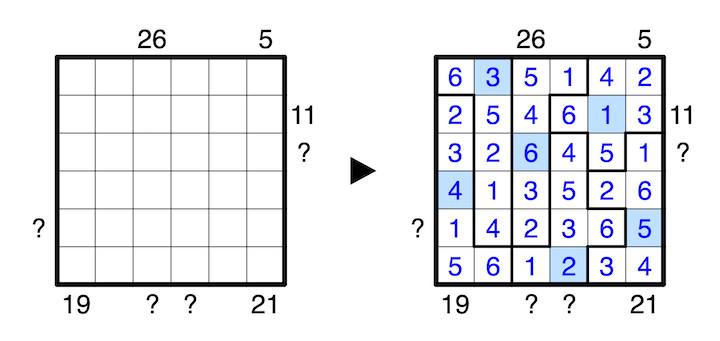

A number outside the grid indicates the sum of the first N numbers from the direction of the clue, where N is the number closest to the clue. The first N numbers are also all in the same region, and the N+1th number is in a different region. A question mark can be any positive integer.
Exactly one number in every row, column, and region counts for double its value. Every number from 1 to 9 is doubled exactly once.
A 1-6 example is provided:
